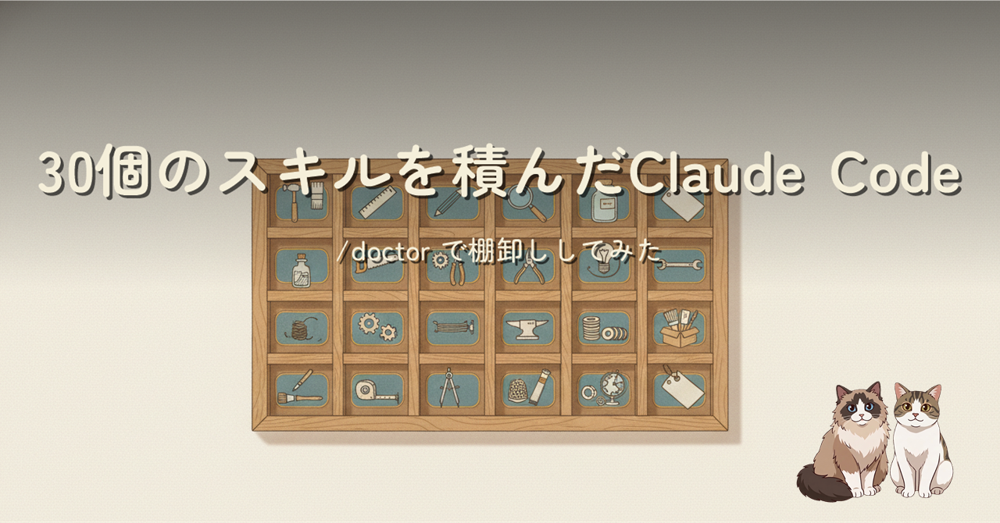
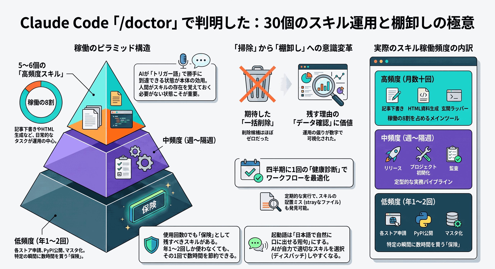
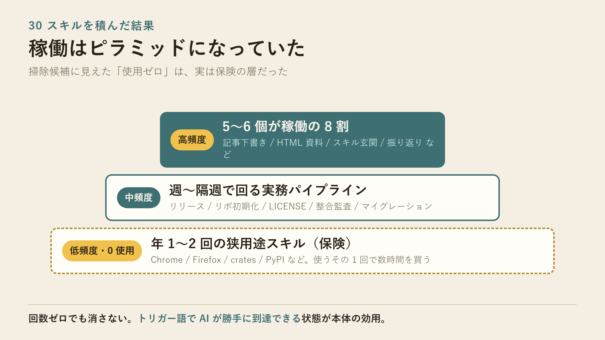
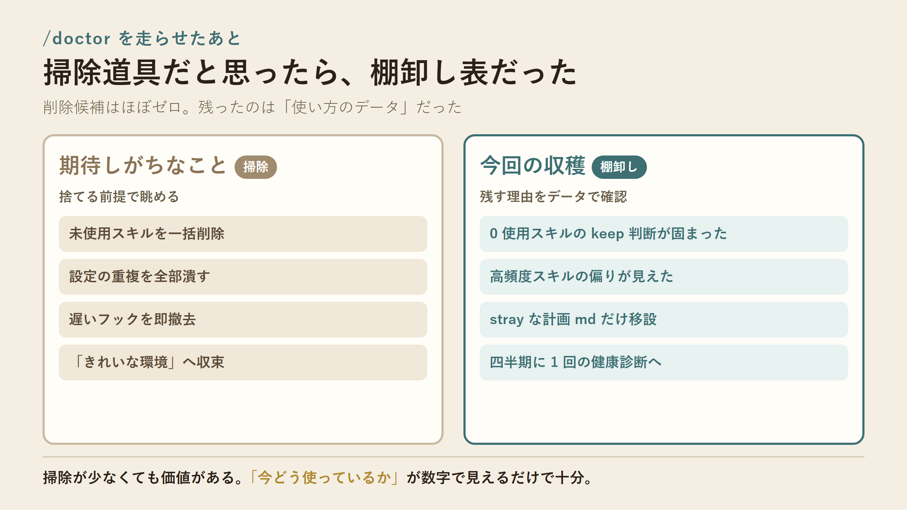

/doctor が /help 経由で増えていたので、30 スキル環境で走らせてみた。掃除はほぼ不要だった。代わりに skillUsage から「高頻度が 8 割、0 使用は保険」という棚の構造が見え、起動語運用の tips までまとめた記録です。

記事全体の要約（AI スキル運用と棚卸しの極意）
/doctor は未使用スキルや重い CLAUDE.md、遅いフックまで一度に見る健康診断コマンドです。今回の収穫は削除リストではなく、「回数ゼロでもトリガー語で到達できる保険スキルは残す」という判断のデータ裏付けでした。起動語を日本語の短句で複数埋める・SKILL.md は薄く参照 md は厚く・正本 1 箇所 + ジャンクション、という運用 tips も一緒に書いています。

稼働はピラミッド。高頻度 5〜6 個が 8 割、底辺は保険

掃除道具だと思ったら、棚卸し表だった